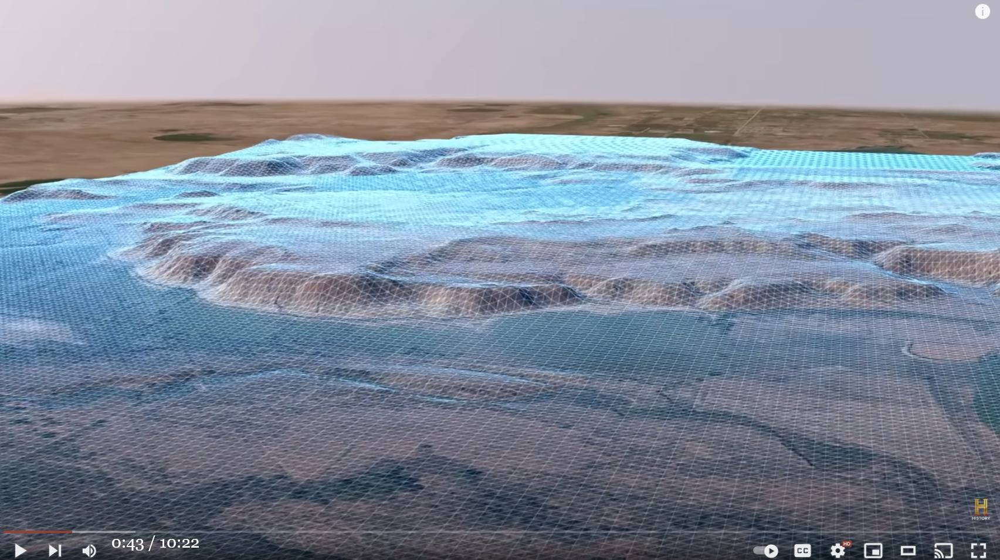
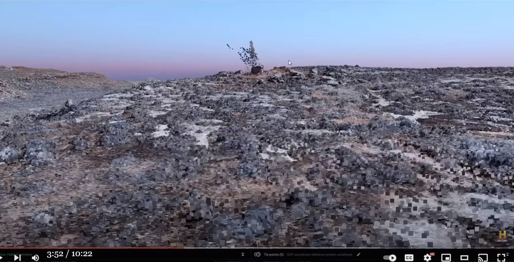
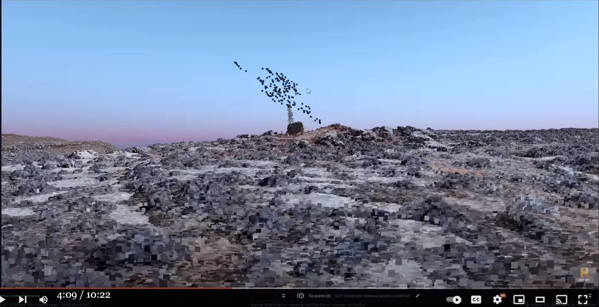

Skinwalker ranch : 上空から無人機で撮影 → 3次元地図を生成 → 謎の空中物体が映り込む ⇒ この正体を解く
（静止画）
（動画：ソース動画が youtube から削除された場合に備えて、上に核心部分だけを切り出して埋め込んでおく）
履歴
- (2023-03-15) 追加。切り出し動画を追加。
- (2022-11-26) 追加
- (2022-11-02) 追加
- (2022-11-02) 作成
前置き
あたかも現場上空に出現した portal みたいな映像が下。
前・州知事（左端）が参加した重要な会議でこの映像を示している。
切り出し静止画
音声書写（自動生成）
▼展開
0:00 hey pete hey 0:03 yeah it's good to have you back 0:05 can't wait to see what you're packing 0:06 this time 0:08 i brought some goodies you can do 0:09 photogrammetry now that's good so we 0:12 invited technologist pete kelsey back to 0:14 perform a final high-tech 3d 0:16 photogrammetry drone scan of the entire 0:19 ranch well i'm excited to have you out 0:22 here it'd be great to take you back to 0:24 the mesa let's go all right let's do it 0:30 photogrammetry is a process where 0:32 thousands of high-definition photographs 0:34 are taken of an area of interest and 0:36 combined to create a detailed 0:38 three-dimensional map potentially 0:40 revealing features that aren't visible 0:42 to the naked eye we want to get a 3d 0:44 model of every part of the ranch to see 0:46 if any anomalies appear 0:48 if something shows up maybe it will help 0:50 us determine what is behind all the uaps 0:53 and the other phenomena that we've 0:55 documented here 0:57 this looks great 1:00 so once all the data i have collected is 1:03 post-processed in a nice neat package i 1:05 hand that to eric 1:07 and he does the heavy lifting and that 1:09 is 1:11 spending hours and hours going through 1:14 this data because it's all visual 1:16 all right i got all green lights here 1:19 spinning up 1:26 literally it comes down to putting eyes 1:29 on the model and looking for anything 1:31 interesting 1:36 the day after pete kelsey conducted his 1:38 photogrammetry scan of the ranch he sent 1:40 eric all of his compiled data files for 1:43 us to review 1:44 well i've got only about a billion data 1:46 points of course this comes out of pete 1:48 kelsey's recent survey work 1:51 [Music] 1:53 this is a three-dimensional model it's 1:56 point cloud data 1:58 what it is is individual points that 2:00 have been located through a complex 2:01 algorithm 2:02 coming out of all these thousands of 2:04 pictures that he's taken 2:05 so you take all those images you stitch 2:07 them together you get a 2:07 three-dimensional model that's 2:09 incredible oh yeah yeah so i've been 2:11 diving into this and turns out there are 2:14 some 2:15 very interesting artifacts showing up 2:19 whoa you might i just did you see it 2:21 yeah 2:22 okay in the sky oh right there yes oh 2:25 weird yes 2:27 that looks like that's a whole bunch of 2:29 points right there oh it is well what 2:31 would cause it to do that if that's up 2:32 in the air 2:34 that's the question 2:38 look at this structure 2:41 this phantom structure that's sticking 2:42 up in the sky 2:45 this is odd i gotta tell you uh 2:48 wow i think it was really prominent from 2:50 here it's like it's a yeah 2:52 some sort of 2:53 big feature 2:56 it looks more than 100 feet in the air 2:59 that's nuts i've connected with pete and 3:02 i've also spoken with 3:04 the vendor of this software 3:06 asking is this common and the answer 3:09 that i've gotten is no 3:11 really 3:13 this is not a common thing in 3:16 terrestrial surveys like this are there 3:18 any other areas in his survey that had 3:21 this sort of artifact to them 3:24 yes 3:26 i want to show you something at another 3:28 location that we've visited that is part 3:30 of this survey okay okay 3:35 oh there's your tab there you go there 3:38 so let me spin us around 3:43 i noticed a couple of things here wow 3:44 now look at this and you may observe the 3:46 same thing so line those two up and 3:49 where are they pointing 3:51 this feature this artifact the largest 3:54 stone that was part of the of the stone 3:56 circle 3:57 and that prominent thing that's jutting 3:59 up you know further to the south you 4:00 have three points in a line 4:03 wow 4:05 interestingly and somewhat mysteriously 4:07 the anomalies to the south and to the 4:11 north of the stone circle 4:13 align perfectly with that large center 4:16 stone 4:17 in the stone circle itself 4:19 could be a coincidence but it sure is 4:21 suggestive what are the odds of that 4:24 right 4:25 we've learned not to ignore any 4:26 anomalous features in our data even if 4:28 we have no idea what to make of them 4:31 so that to me seems like you've almost 4:33 drawn a ray 4:34 from the other anomaly through this 4:36 stone 4:38 to this this anomaly 4:40 we've got a line being drawn here then 4:42 what is that line pointing to what is 4:44 the line there for we need to mark these 4:47 spots because you know what if this is 4:49 somehow mapping an anomaly that we need 4:52 to investigate 4:54 could pete kelsey have actually captured 4:56 visual evidence that there really are 4:58 portals on skinwalker ranch and could it 5:01 help explain why we see uaps appear and 5:04 then suddenly disappear well we owe it 5:07 to ourselves to follow up on every data 5:09 anomaly that we come across particularly 5:12 when they're as prominent as the ones 5:13 we're looking at 5:14 eric the data is absolutely fascinating 5:16 we need to meet with brandon and review 5:18 this and everything else we've learned 5:20 this year i think we've just got to do 5:22 that follow up on this data yep let's do 5:25 it 5:29 greetings everyone hey 5:31 i think everyone would agree this past 5:34 year has been the most productive year 5:36 in history relative to the investigation 5:38 at skinwalker ranch 5:40 we launched this phase of the 5:41 investigation with 5:43 former governor herbert 5:45 his interest 5:47 and ongoing engagement with this effort 5:50 has been an important part of 5:52 really elevating the formality of this 5:54 research and how important it is 5:57 we also have joining us today 5:59 investigative journalist george knapp 6:02 best known as the leading journalist 6:06 documenting the reality of not only the 6:08 ranch but this type of phenomena i'd 6:11 like to say governor by the way you have 6:13 a really beautiful state but it's an 6:14 awfully weird state 6:17 i think today will be 6:19 very eye-opening 6:20 day and briefing for 6:22 our guests brandon this next one you 6:24 have yet to see because it just happened 6:26 to us really yeah 6:29 it is so bizarre 6:31 i think it'd be a good idea to get 6:32 everyone's eyes on this please 6:33 absolutely let's do 6:37 this is a three-dimensional model of 6:38 pete kelsey's recent survey work 6:42 pete scanned the entire mesa and look at 6:44 this structure 6:47 wow 6:49 incredible 6:52 wow 6:54 this looks like a solid structure in the 6:57 sky yes 6:59 this object whatever it is uh it's 7:02 really fascinating 7:04 what are we looking at we don't know 7:05 this point 7:07 well we need to talk about the reality 7:10 of what we're dealing with in this 7:12 investigation 7:13 based on all of 7:15 these combined events 7:17 how do we move forward i think everyone 7:19 would agree that we move forward having 7:22 a multi-disciplinary 7:23 diverse approach to really tackling this 7:26 problem set and taking the data 7:29 that drives us 7:31 in the right direction to uncover the 7:33 secret 7:34 of what lies on this ranch both above 7:37 and below 7:39 it appears we are triggering contact 7:43 in some way shape or form and 7:46 it is manifesting itself 7:48 above the ranch 7:50 in a very profound way 7:53 we're dealing with forces 7:55 we're dealing with phenomena that 7:58 redefines 8:00 not only our vision of reality but 8:02 potentially even history itself 8:05 i'm very excited about the next chapter 8:08 i think you've got momentum i again like 8:11 dr taylor talking about this should be a 8:13 scalpeled approach eric you've mentioned 8:15 how we've got to be careful about what 8:17 we're doing here so we don't damage the 8:19 information we'll find very much so you 8:22 guys have made breakthroughs on so many 8:24 different uh bases and i can't wait to 8:26 see what comes next well thank you 8:28 governor for your time and attention and 8:30 thank you george for joining us glad to 8:33 be here i want to thank everyone at this 8:35 table for your sacrifice 8:38 for your professionalism 8:40 for your talents your expertise 8:43 we are opening new doors new paths to 8:46 explore 8:48 i look forward to the path ahead and 8:51 we'll be in touch with you regarding 8:53 next steps 8:54 thank you all right thanks brandon thank 8:57 you 8:59 thank you governor 9:00 george to meet you yeah yeah 9:03 as we wrap up this year's investigation 9:06 at skinwalker ranch we all feel like 9:09 we're getting much closer to finding 9:10 some real answers about this place 9:13 i mean when i first came to the ranch i 9:15 had never even seen a uap 9:17 we got something hold on look what is 9:19 that holy but we've witnessed and 9:22 documented phenomena up in the sky what 9:25 the hell is that in the sky that thing 9:27 is big and spherical that has changed my 9:29 entire outlook on what i thought was 9:32 possible who knows what we could 9:33 ultimately reveal 9:35 oh my 9:36 we owe it to ourselves and the entire 9:38 world to figure out the truth behind 9:41 this ranch 9:43 it takes courage to confront these 9:45 topics 9:46 i believe as we brave 9:49 that territory as we have the courage to 9:52 delve deeper 9:54 both literally and figuratively 9:56 into skinwalker ranch 9:58 we're going to find that not only will 10:01 we come to an understanding 10:03 of the dark forces that we're 10:05 interacting with 10:06 but also the nature of our world 10:09 and our reality 10:22 you
動画(10:22)
DISAPPEARING ALIEN PORTALS Found In 3D Images | The Secret of Skinwalker Ranch (Season 3)
コメント 1
- この空中の存在は portal 的なものだと皆、解釈しているがそれはない。もっとありふれたもので、合理的に説明できる。
この空中の謎の存在の正体
この空中の存在がかつて一度たりとも肉眼や通常のカメラで捉えられたことはない。なぜか？ それがこの正体を解くヒントとなる。
まず、この 3D map がどのように作成されたのかを理解する必要がある。この無人機は GPS 誘導下で一定高度を保ちつつ、Skinwalker ranch の上空をくまなく碁盤状にスキャンしながら（いわば、昔のブラウン管 TV の走査線のように左右に高速でスキャンしながら上下にもゆっくり移動するように）飛行し、各格子点で写真撮影を繰り返した筈。
そして隣接する区域の複数の写真に写った同一地形の僅かな視差から地形の高度データを抽出しているに違いない（人間が左右の眼の視差から対象物体の遠近感を感知するのと同じ原理）。
撮影の翌日（or 翌々日）には 3D map のデータが完成しているので撮影された多量の写真から 3D map を生成するのは人手を介さず全自動で行われた筈。誰もこの無人機が撮影した生の映像を見ていない。つまり空中に浮かぶ棒状の塊の生の映像を誰も見ていない。計算機処理後に最終出力された 3D map として合成された映像を見ているだけ。
Skinwalker ranch ではその上空を含め、EMF 異常が多発している。それにより電子機器の誤動作や機能停止が頻繁に起きている。Skinwalker ranch の上空では EMF 異常の分布は一様ではなく、強い場所と弱い場所がある筈。EMF 異常が強烈な空域では無人機が撮影したデータがノイズまみれとなり、比較的弱ければノイズは少なくなる。隣接した空域では映像のノイズも同様の傾向となる。
つまり…。3D map に写った空中の謎の物体の正体はこの EMF 異常によるノイズ。隣接した区画の複数の映像に写ったノイズの差異から、 3D map 生成用の計算機アルゴリズムは強引に空中の地形ブロック（＝ノイズ）の高度を割り当てた。
Skinwalker ranch の調査チームの誰一人として生データ（無人機が撮影した空中写真の生映像）を確認せず、ディジタル処理された最終出力データだけを信じるから、このようなミステリーが生まれた。
コメント 2
- 後ろから 2番目の写真に注目。この地表付近のノイズの塊は（この切り出し写真には写っていないが）付近の複数の隣接地帯にも存在し、それは直近の巨石の場所にそのまま対応しているとある（ダルいるいので確認はしないが Eric あたりがそう語っていた）。 - つまり、これは付近の地層を含めた巨石に含まれる結晶成分が EMF 異常を生成させている証拠ともなっている。 (2022-11-02)(2022-11-22)
(2022-11-26 begin)
前置き
重要な内容なので、この件について情報を追加しておく。
最初にこの動画全体の音声書写（自動生成）とその DeepL を掲載。
次に直線上に並んだ空中「物体」と地上の石の相関の件に絞ってその詳細を記録しておく。
音声書写（自動生成）
▼展開
0:00 hey pete hey 0:03 yeah it's good to have you back 0:05 can't wait to see what you're packing 0:06 this time 0:08 i brought some goodies you can do 0:09 photogrammetry now that's good so we 0:12 invited technologist pete kelsey back to 0:14 perform a final high-tech 3d 0:16 photogrammetry drone scan of the entire 0:19 ranch well i'm excited to have you out 0:22 here it'd be great to take you back to 0:24 the mesa let's go all right let's do it 0:30 photogrammetry is a process where 0:32 thousands of high-definition photographs 0:34 are taken of an area of interest and 0:36 combined to create a detailed 0:38 three-dimensional map potentially 0:40 revealing features that aren't visible 0:42 to the naked eye we want to get a 3d 0:44 model of every part of the ranch to see 0:46 if any anomalies appear 0:48 if something shows up maybe it will help 0:50 us determine what is behind all the uaps 0:53 and the other phenomena that we've 0:55 documented here 0:57 this looks great 1:00 so once all the data i have collected is 1:03 post-processed in a nice neat package i 1:05 hand that to eric 1:07 and he does the heavy lifting and that 1:09 is 1:11 spending hours and hours going through 1:14 this data because it's all visual 1:16 all right i got all green lights here 1:19 spinning up 1:26 literally it comes down to putting eyes 1:29 on the model and looking for anything 1:31 interesting 1:36 the day after pete kelsey conducted his 1:38 photogrammetry scan of the ranch he sent 1:40 eric all of his compiled data files for 1:43 us to review 1:44 well i've got only about a billion data 1:46 points of course this comes out of pete 1:48 kelsey's recent survey work 1:51 [Music] 1:53 this is a three-dimensional model it's 1:56 point cloud data 1:58 what it is is individual points that 2:00 have been located through a complex 2:01 algorithm 2:02 coming out of all these thousands of 2:04 pictures that he's taken 2:05 so you take all those images you stitch 2:07 them together you get a 2:07 three-dimensional model that's 2:09 incredible oh yeah yeah so i've been 2:11 diving into this and turns out there are 2:14 some 2:15 very interesting artifacts showing up 2:19 whoa you might i just did you see it 2:21 yeah 2:22 okay in the sky oh right there yes oh 2:25 weird yes 2:27 that looks like that's a whole bunch of 2:29 points right there oh it is well what 2:31 would cause it to do that if that's up 2:32 in the air 2:34 that's the question 2:38 look at this structure 2:41 this phantom structure that's sticking 2:42 up in the sky 2:45 this is odd i gotta tell you uh 2:48 wow i think it was really prominent from 2:50 here it's like it's a yeah 2:52 some sort of 2:53 big feature 2:56 it looks more than 100 feet in the air 2:59 that's nuts i've connected with pete and 3:02 i've also spoken with 3:04 the vendor of this software 3:06 asking is this common and the answer 3:09 that i've gotten is no 3:11 really 3:13 this is not a common thing in 3:16 terrestrial surveys like this are there 3:18 any other areas in his survey that had 3:21 this sort of artifact to them 3:24 yes 3:26 i want to show you something at another 3:28 location that we've visited that is part 3:30 of this survey okay okay 3:35 oh there's your tab there you go there 3:38 so let me spin us around 3:43 i noticed a couple of things here wow 3:44 now look at this and you may observe the 3:46 same thing so line those two up and 3:49 where are they pointing 3:51 this feature this artifact the largest 3:54 stone that was part of the of the stone 3:56 circle 3:57 and that prominent thing that's jutting 3:59 up you know further to the south you 4:00 have three points in a line 4:03 wow 4:05 interestingly and somewhat mysteriously 4:07 the anomalies to the south and to the 4:11 north of the stone circle 4:13 align perfectly with that large center 4:16 stone 4:17 in the stone circle itself 4:19 could be a coincidence but it sure is 4:21 suggestive what are the odds of that 4:24 right 4:25 we've learned not to ignore any 4:26 anomalous features in our data even if 4:28 we have no idea what to make of them 4:31 so that to me seems like you've almost 4:33 drawn a ray 4:34 from the other anomaly through this 4:36 stone 4:38 to this this anomaly 4:40 we've got a line being drawn here then 4:42 what is that line pointing to what is 4:44 the line there for we need to mark these 4:47 spots because you know what if this is 4:49 somehow mapping an anomaly that we need 4:52 to investigate 4:54 could pete kelsey have actually captured 4:56 visual evidence that there really are 4:58 portals on skinwalker ranch and could it 5:01 help explain why we see uaps appear and 5:04 then suddenly disappear well we owe it 5:07 to ourselves to follow up on every data 5:09 anomaly that we come across particularly 5:12 when they're as prominent as the ones 5:13 we're looking at 5:14 eric the data is absolutely fascinating 5:16 we need to meet with brandon and review 5:18 this and everything else we've learned 5:20 this year i think we've just got to do 5:22 that follow up on this data yep let's do 5:25 it 5:29 greetings everyone hey 5:31 i think everyone would agree this past 5:34 year has been the most productive year 5:36 in history relative to the investigation 5:38 at skinwalker ranch 5:40 we launched this phase of the 5:41 investigation with 5:43 former governor herbert 5:45 his interest 5:47 and ongoing engagement with this effort 5:50 has been an important part of 5:52 really elevating the formality of this 5:54 research and how important it is 5:57 we also have joining us today 5:59 investigative journalist george knapp 6:02 best known as the leading journalist 6:06 documenting the reality of not only the 6:08 ranch but this type of phenomena i'd 6:11 like to say governor by the way you have 6:13 a really beautiful state but it's an 6:14 awfully weird state 6:17 i think today will be 6:19 very eye-opening 6:20 day and briefing for 6:22 our guests brandon this next one you 6:24 have yet to see because it just happened 6:26 to us really yeah 6:29 it is so bizarre 6:31 i think it'd be a good idea to get 6:32 everyone's eyes on this please 6:33 absolutely let's do 6:37 this is a three-dimensional model of 6:38 pete kelsey's recent survey work 6:42 pete scanned the entire mesa and look at 6:44 this structure 6:47 wow 6:49 incredible 6:52 wow 6:54 this looks like a solid structure in the 6:57 sky yes 6:59 this object whatever it is uh it's 7:02 really fascinating 7:04 what are we looking at we don't know 7:05 this point 7:07 well we need to talk about the reality 7:10 of what we're dealing with in this 7:12 investigation 7:13 based on all of 7:15 these combined events 7:17 how do we move forward i think everyone 7:19 would agree that we move forward having 7:22 a multi-disciplinary 7:23 diverse approach to really tackling this 7:26 problem set and taking the data 7:29 that drives us 7:31 in the right direction to uncover the 7:33 secret 7:34 of what lies on this ranch both above 7:37 and below 7:39 it appears we are triggering contact 7:43 in some way shape or form and 7:46 it is manifesting itself 7:48 above the ranch 7:50 in a very profound way 7:53 we're dealing with forces 7:55 we're dealing with phenomena that 7:58 redefines 8:00 not only our vision of reality but 8:02 potentially even history itself 8:05 i'm very excited about the next chapter 8:08 i think you've got momentum i again like 8:11 dr taylor talking about this should be a 8:13 scalpeled approach eric you've mentioned 8:15 how we've got to be careful about what 8:17 we're doing here so we don't damage the 8:19 information we'll find very much so you 8:22 guys have made breakthroughs on so many 8:24 different uh bases and i can't wait to 8:26 see what comes next well thank you 8:28 governor for your time and attention and 8:30 thank you george for joining us glad to 8:33 be here i want to thank everyone at this 8:35 table for your sacrifice 8:38 for your professionalism 8:40 for your talents your expertise 8:43 we are opening new doors new paths to 8:46 explore 8:48 i look forward to the path ahead and 8:51 we'll be in touch with you regarding 8:53 next steps 8:54 thank you all right thanks brandon thank 8:57 you 8:59 thank you governor 9:00 george to meet you yeah yeah 9:03 as we wrap up this year's investigation 9:06 at skinwalker ranch we all feel like 9:09 we're getting much closer to finding 9:10 some real answers about this place 9:13 i mean when i first came to the ranch i 9:15 had never even seen a uap 9:17 we got something hold on look what is 9:19 that holy but we've witnessed and 9:22 documented phenomena up in the sky what 9:25 the hell is that in the sky that thing 9:27 is big and spherical that has changed my 9:29 entire outlook on what i thought was 9:32 possible who knows what we could 9:33 ultimately reveal 9:35 oh my 9:36 we owe it to ourselves and the entire 9:38 world to figure out the truth behind 9:41 this ranch 9:43 it takes courage to confront these 9:45 topics 9:46 i believe as we brave 9:49 that territory as we have the courage to 9:52 delve deeper 9:54 both literally and figuratively 9:56 into skinwalker ranch 9:58 we're going to find that not only will 10:01 we come to an understanding 10:03 of the dark forces that we're 10:05 interacting with 10:06 but also the nature of our world 10:09 and our reality 10:22 you
DeepL 原文不完全
▼展開
やあ ピート 戻ってこれて嬉しいよ 何を詰め込んでるか見るのが楽しみだ 今回は いいものを持ってきたよ 写真測量ができるんだ。 技術者のピート・ケルシーを再び招き 最後のハイテク3Dを ドローンによる写真測量です 最後の高精細3D写真測量による無人機スキャンを行います。 メサにお連れするのが楽しみです。 メサに戻るのもいいものだ 写真測量は 何千枚もの高解像度の写真を 高解像度の写真を撮影し 詳細な三次元地図を作成します。 3次元地図を作成します。 肉眼では見ることのできない特徴を明らかにすることができます。 肉眼では見ることのできない地形がわかるかもしれません。 牧場のあらゆる場所の3Dモデルを作成して 何か異常がないか もし何かが現れたら... このような現象が起こる背景には何があるのか 解明できるかもしれません。 解明できるかもしれません これは素晴らしい それで、集めたデータを 後処理をし、きちんとしたパッケージにして それをエリックに渡します。 に渡して、彼が力仕事をしてくれます。 それは 何時間もかけて、このデータに目を通すのです。 このデータはすべて視覚的なものなので よし、青信号になったぞ 回転している つまりは、モデルに目を向けて モデルを見て、何か面白いものがないか 面白い ピート・ケルシーが牧場を写真測量した翌日に 写真測量で牧場をスキャンした翌日に エリックにデータファイルを送ってくれました。 エリックに送ってきました 約10億のデータです もちろんこれはピート・ケルシーが最近行った ケルゼイの最近の調査結果だ [ミュージック] これは3次元モデルで 点群データ これは点群データです 複雑なアルゴリズムで位置決めされた アルゴリズム 何千枚もの写真から 撮影された写真 だから、これらの画像を全部集めて、つなぎ合わせると それらをつなぎ合わせると... 3次元モデル そうそう、それで これを調べてみると いくつか 非常に興味深い遺物が出てきました おいおい、見たか？ うん OK 空の上 oh right there yes oh おかしいな あれがそうだ。 点在しているように見えます。 それが空中にあるのなら、どうしてそうなるのか 空中で それが問題だ この構造を見てください 空中に突き出ているこの幻の構造体を 空中に浮かび上がっている これは奇妙だ......言っておくが ここから見るとすごく目立つと思う ここからはまるで ある種の 大きな特徴 30m以上あるように見える ピートと話したけど このソフトウェアのベンダーと このソフトのベンダーの方と話をしました。 このようなことはよくあることですかと聞いてみましたが、答えは 答えは「ノー」でした。 本当に このような地上波の調査では、一般的なことではありません。 このような地上波の調査にはあまりないことです。 彼の調査の中で、このような遺物があった他の地域は このようなアーティファクトがあったのでしょうか？ あります 別の場所で、あるものをお見せしたいと思います。 私たちが訪れた場所で、この調査の一部である この調査の一部です タブがありますね。 では、ぐるっと回ってみましょう ここでいくつか気づいたことがあります。 これを見てください、同じことが観察できるかもしれません。 この2つを並べてみてください。 どこを指しているのか この特徴は、この人工物......最も大きな石です。 ストーンサークルの一部であった石 円形 そして、この突き出たものは さらに南へ行くと 3つの点が並んでいる なんと 面白いことに、ちょっと不思議なことに ストーンサークルの南と北にある異常は ストーンサークルの北にある異常は と完全に一致している。 石 ストーンサークルの中にある 偶然の一致かもしれませんが の確率はどのくらいだろう？ のでしょうか？ 私たちは、データの異常な特徴を無視しないことを学びました 無視できないことを学びました たとえ、それをどう考えたらいいのかわからなくても ということで、私には、あなたがほとんど 光線を引いて もう一つの異常から、この 石 この異常まで ここに線が引かれているのです。 その線は何を指しているのか？ この線は何を指しているのか？ なぜなら、もしこれが もし、これが異常のマッピングだったら 調査する ピート・ケルシーが実際に捉えたのは 本当にあるのか？ スキンウォーカー牧場にポータルがある証拠だ UAPが現れたり消えたりするのは 突然消えてしまった 私たちはすべてのデータを追跡調査する義務があります 追跡調査する義務がある 特に今回のような顕著な場合は 私たちが見ているのは エリック......データは実に魅力的だ ブランドンと会って検討する必要があります このことと、今年学んだことすべてを 今年はこのデータについて このデータのフォローアップをするんだ そうしよう 皆さん、こんにちは。 この一年が最も生産的な年であったことは、誰もが認めるところでしょう。 最も生産的な年であったことは 歴史上最も充実した年だった スキンウォーカー・ランチの 我々はこの段階を開始しました ハーバート元知事と ハーバート元知事と この取り組みに この取り組みに参加し 重要な役割を担ってきました。 この研究の形式を高め この研究の重要性を高めてくれました。 また、本日は 調査ジャーナリスト、ジョージ・ナップ氏 代表的なジャーナリストとして知られています この現象を記録している第一人者です このような現象を記録してきた第一人者です ところで、知事に言いたいのですが、あなたは本当に美しい州をお持ちです。 本当に美しい州ですが とても奇妙な州です 今日は とても目を見張るような 今日は目を見張るような一日となるでしょう ゲストのブランドンには、次のようなものをお見せします。 まだ見ていないのですが、これは私たちに起こったことで 私たちに起こったことです。 とても奇妙です これは良いアイデアだと思いますので 皆に見てもらいましょう 絶対そうしましょう これはピート・ケルシーが最近行った ピート・ケルシーが最近行った調査の3次元モデルです ピートはメサ全体をスキャンしましたこの構造を見てください この構造を見てください すごい 信じられない すごい これは空に浮かぶ固い構造物のようだ そうだ この物体......それが何であれ......それは......本当に 本当に魅力的だ 何を見ているのか......わからない。 この点 さて、現実について話す必要があります この捜査で扱っているものについて 調査する必要があります この調査において このような複合的な出来事から どうすれば前に進めるのか......誰もがそう思うでしょう 学際的な研究を進めることに同意すると思います 学際的で 多様なアプローチでこの問題に取り組み そして、そのデータをもとに 私たちを動かしている 正しい方向に導いてくれます。 秘密 この牧場の上にも下にも、何があるのか。 解明していきます。 私たちは何らかの形で接触しているようです。 何らかの形で それが顕在化しているのです。 牧場の上空で 非常に深遠な方法で 私たちが扱っているのは力であり 私たちが扱っている現象は 再定義しているのです。 現実のビジョンだけでなく 歴史そのものを変えるかもしれない 次の章に期待してるよ 勢いがありますね私も好きです このようなことを言うテーラー博士のように エリックが言っていたように エリックも言っていたね。 このようなことをすると、せっかく見つけた情報に傷がついてしまいます。 情報を損なわないように注意しなければならないと言いましたね。 あなた方は非常に多くの分野でブレークスルーを成し遂げてきました 次に何が出てくるか楽しみです。 次に何が起こるか楽しみです。 お時間をいただき、ありがとうございました。 ジョージもありがとうございます。 この場にいる皆さんに感謝します。 犠牲になった方々に プロフェッショナリズムに 皆さんの才能と専門知識に 私たちは新しい扉を開いているのです 探検しています これからの道を楽しみにしています。 次のステップについては、またご連絡します。 次のステップに進みます ありがとうございました ブランドン ありがとうございました ありがとうございました ありがとうございました ジョージ 会えてよかった 今年の調査を終えるにあたって スキンウォーカー牧場の調査は終了し... この場所について この場所の本当の答えに 私が初めてこの牧場に来た時... UAPを見たこともなかった 俺たちは何かをつかんだんだ......見ろよ、これは何だ？ "聖なるもの "ですが 空で起きた現象を記録しています 空には何があるんだ？ 大きな球体です。 私の考えを変えました 可能です。 最終的に明らかになる なんと 私たちは、自分自身と全世界のために この牧場に隠された真実を この牧場の このような話題に直面するのは勇気のいることです。 勇気がいることです 勇気を出して その領域に踏み込む勇気があれば より深く掘り下げることができる 文字通りの意味でも、比喩的な意味でも スキンウォーカー・ランチに 私たちは、ただ理解するだけでなく 理解できるようになる 闇の力を理解するだけでなく 理解することができる この世界と現実の本質を 理解できるようになるでしょう。 あなた
この空中「物体」がノイズであることを強く示唆する具体的根拠
重要な意味を持つ箇所なので句読点を含めて発言を記録しておく。ただでさえ DeepL はちょっとでも係り受けが複雑になると肝心な部分を平然と無視して訳す悪癖があるので、可能な限り句読点を多めに入れている。
なぜか TT(=Travis Taylor ) を 町田 と DeepL は訳している。
▼展開
3:20 Eric Bard(Principal investigator): I wnat to show you something at another location that we've visted. That is part of ths survery. Okey, there you go. there. so let me spin us aroud. I noticed a couple of things here. Travis Taylor: Wow. look at this! Eric: And you may observe the same thing. TT: So line those two up and where are they pointing? Eric: This feature, this artifact the largest stone that was part of the stone circle. And that prominet thing that's jutting up you know further to the south. You have three points in a line. Wow. Eric: Interestingly and somewhat mysteriously, the anomalies to the south to the north of the stone circle align perfectly with that large center stone, In the stone circle itself. Could be a concidence? but it sure is suggestive. TT: What are the that? Eric : right. Eric: We've learned not to ignore any anomalous features in out data even if we have no idea what to make of them. TT: So that to me seems line you've almost drawn a ray frooom the ohter anomary through this stone to this anomaly. We've got a line being drawn here then what is that line pointing to? What is the line there for? We need to mark these spots, because you know, what this is somehow mapping an anomaly that we need to investigate. TT: Could Pete Kelsey have actually capureed visual evidence that these really are portals on skinwalker ranch? And cound it help explain why we see UAPs appear and then suddenly disappear? Eric: Well, we owe it to ourselves to follow up on every data anomaly that we come across. Particularly when they're as prominet as the ones we're looking at. TT: Eric, the data is absolutely fascinating, we need to meet with Brandon and review this and everything else we've learned this year. I think we've just go to do that follow up on this data. Eric: Yep, let's do it.
 3:20 エリック・バルド（研究代表者）。 私はあなたに何かを示したいと思います 私たちが訪問した別の場所で。これはこの調査の一部です。 はい、どうぞ。 では、ぐるっと回ってみましょう。 ここで2つほど気づいたことがあります。 トラヴィス・テイラー わあ、これを見てください （奥のタワー、中程のメッカのカアバ神殿みたいな立方体、手前の斜めの薄いタワーの 3つのノイズ群に注目。この 3つが直線上に並んでいる。）   Eric: 同じものを見てください。 町田: じゃあ、この二つを並べてみて、どこを指しているんですか？ エリック: この石は、ストーンサークルの一部であった一番大きな石です。この石はストーンサークルの一部で、一番大きな石で、南に突き出ているのがその石です。 3つの点が一直線に並んでいますね わあ Eric: 面白いことに、ちょっと不思議なことに、ストーンサークルの南と北の異常は、ストーンサークル自体のあの大きな中心石と完全に一致しています。これは偶然の一致なのでしょうか？ 町田: あれは何なんですか？ Eric: そう。 Eric: 私たちは、たとえ何を意味するのかわからなくても、データの中の異常な特徴を無視してはいけないと学んできました。 町田: そうすると、この石を通して、他の異常からこの異常まで、ほとんど線が引かれているように見えますね。ここに線が引かれている。では、その線は何を指しているのでしょう？この線は何のためにあるのでしょうか。なぜかというと、これは何らかの形でマッピングされた異常で、私たちはそれを調査する必要があるのです。 TT: ピート・ケルシーは、これがスキンウォーカー・ランチのポータルであるという視覚的証拠を実際に捕らえたのだろうか？ なぜUAPが現れたり消えたりするのか、その説明の助けになるのでは？ エリック: まあ、私たちは遭遇したすべてのデータの異常を追跡調査する義務があります。特に、私たちが見ているような突出したデータであればなおさらです。 町田: エリック、このデータは実に魅力的ですね。ブランドンと会って、このデータ、そして今年学んだことすべてを見直す必要がありますね。このデータのフォローアップをしに行くところだと思うのですが。 Eric: そうだね、そうしよう。
- この 2日後、前・州知事を招いて行われた Brandon Fugal 主催の報告会議（冒頭の映像）が開催された。
3D モデルの表示：実時間での回転中は表示に制約が生じている様子
- この空中「物体」は簡略表示モード（点群の一部しか表示しないモード）では非常に薄いことが以下からわかる。
これは、多数の点を表示するには時間を要するから、実時間で 3次元空間内部で対象を回転させている最中の映像は簡略表示モード（点群の一部しか表示しないモード）になっている筈。
つまり以下の切り出し静止画は回転中の映像なので簡略表示モード。
- 下の切り出し映像は視点固定（＝回転停止）時の映像なので、時間とともに点群が徐々に増えて表示されている。
(2022-11-26 end)
初出
【編】Skinwalker ranch : 上空から無人機で撮影した 3D map に写った空中の謎の物体 （→正体は…） （全体＋追加） (2022-11-26)